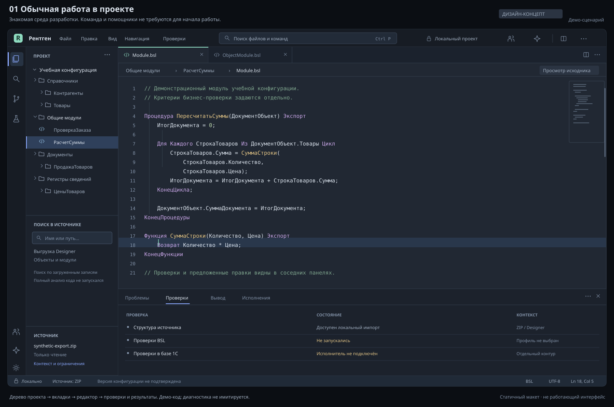
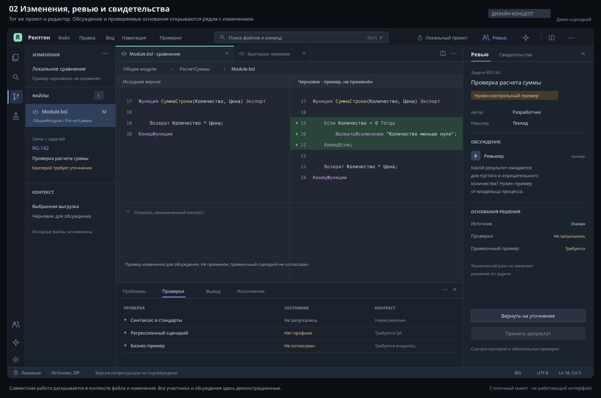
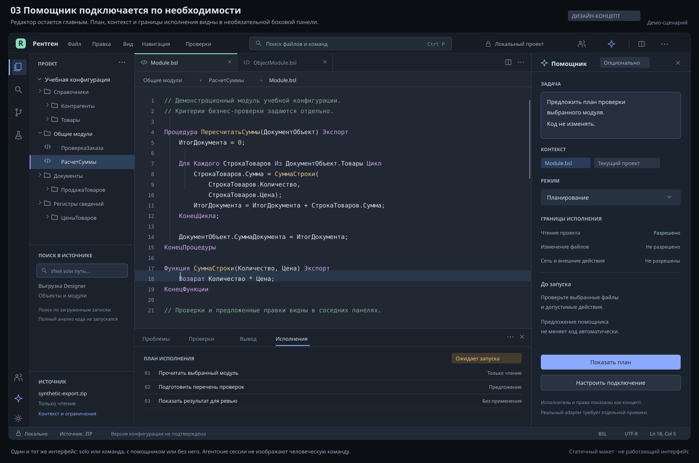

Windowsx64 / CPython 3.11
Сначала небольшая копия выгрузки. Произвольные конфигурации, качество AI и полный ежедневный цикл ещё требуют приёмки.
01 / EARLY ACCESS Открытое локальное ядро
Разберитесь в исходниках 1С.
Подготовьте черновик. Проверьте правку.
Сохраните контроль над изменениями.
Windows x64 · CPython 3.11 · Ранний доступ
Сложную конфигурацию проще разбирать по шагам. Рентген связывает сохранённый код, отдельное предложение и результаты проверок.
Зафиксируйте исходное состояние. Снимок связывает точные файлы и граф проекта.
Первый снимокНайдите модуль, прочитайте сохранённый код, изучите связи и сравните изменения.
Работа с кодомСохраните предложение отдельным черновиком, вручную или с моделью. Версии остаются в истории.
Первый черновикПрочитайте diff и результаты для выбранной ревизии. Решите, доработать или отдельно применить.
Границы проверокСохранённый черновик и успешная проверка сами по себе не меняют рабочую базу.
Заказ стал считать сумму иначе. Где искать причину и что проверить перед правкой?
Начните с точного кода, который сохранён в выбранном снимке.
Функция СуммаЗаказа(Строки) Итого = 0; Для Каждого Строка Из Строки Цикл Итого = Итого + Строка.Сумма; КонецЦикла; Возврат Итого;КонецФункцииПуть к модулю, сохранённая версия и конкретная строка. Живые исходники не изменяются.
Связь помогает выбрать место для чтения. Причину ещё нужно подтвердить.
Здесь складывается поле «Сумма». Если правила расчёта изменились, проверьте, где заполняется это поле и какое поведение ожидается.
Это учебное объяснение. Граф вызовов не доказывает бизнес-причину, а ответ модели требует проверки.
Допустим, подтверждено требование считать сумму из количества и цены.
Итого = Итого + Строка.Сумма;Итого = Итого +
Строка.Количество * Строка.Цена;Проверить скидки, округление и тестовые случаи. Новая правка требует новой проверки. Применение — отдельная операция.
Синтетический пример для объяснения сценария. Это не интерфейс Рентгена, не запуск анализатора и не совет для вашей конфигурации. Реальные возможности
Подключайте инструменты по задаче. Для первого снимка и списка модулей AI не нужен, если папка выгрузки уже подготовлена.
Как устроен РентгенРанний доступ с ограниченными проверенными сценариями. Публикация пакета и готовность повседневной работы — разные этапы.
Сначала небольшая копия выгрузки. Произвольные конфигурации, качество AI и полный ежедневный цикл ещё требуют приёмки.
В Core dev17 отдельно опубликованы локальное состояние, чтение истории и ограниченный Rust ZIP import. Без capture, live apply, native 1С и Companion. Полный Linux/macOS-продукт пока не принят.
Отдельный Rust-компонент проверяет синтетические факты и выбирает следующую проверку. В опубликованные пакеты он не входит; пользовательская диагностика, чтение реальной базы и native adapters остаются следующими этапами.
Editor / Main witness — эксперименты. Live apply и native-инструменты имеют отдельные ограничения.
Проект, код и метаданные в центре. Поиск, проверки и отладка рядом. Для одного разработчика и команды, с помощниками или без них.
Первые дизайн-концепты. Статические макеты с учебными данными, не снимки работающей IDE. Новая среда ещё не входит в Core dev17 / Companion 0.1.18.



Понятный вход в проект и хранилище, поиск по метаданным и подтверждённая точка останова в нужном процессе и версии кода.
Проверить, обновить, запустить и отладить из IDE через штатные инструменты 1С. Исходник, собранный artifact и применённая конфигурация учитываются раздельно.
Review, права и изолированные изменения. Затем формы, запросы, СКД, расширения, merge и полноценный build/test/deploy после отдельных проверок.
Подготовьте Windows x64, Python 3.11 и копию небольшой папки выгрузки с XML и BSL. Один файл .cf или .dt вместо неё не подойдёт.
Открыть первый запускКоманды, ожидаемые ответы и помощь при ошибках.
Проверьте контрольную сумму готового выпуска и создайте отдельное окружение.
Зарегистрируйте проект. Храните локальное состояние отдельно от исходников.
Сохраните снимок и получите список. Редактор, модель и проверки добавите после.
Если папка выгрузки уже есть, для первого снимка и списка модулей они не нужны. Для получения самой выгрузки и проверок платформой действуют отдельные требования. AI, BSL Language Server, 1С и YAxUnit подключаются по задаче.
Отчёт модели не даёт права на запись. Сохранение черновика и успешная проверка не меняют рабочую базу. Применение поддержанной правки к выгрузке и обновление информационной базы 1С — отдельные операции со своими правами и условиями.
Собственный код Рентгена опубликован под MIT. Обязательной подписки на сервис Рентгена нет. Лицензии и условия 1С, редактора, моделей и зависимостей действуют отдельно. Лицензия MIT.